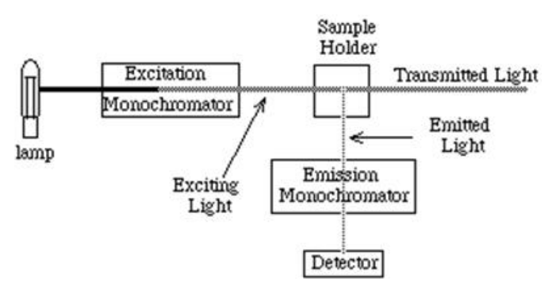

開卷有益 ／
藥師 ／ 藥物分析與生藥學 ／ 104 年第 1 次104 年第 1 次藥師藥物分析與生藥學試題與答案
這一頁是民國 104 年第 1 次藥師藥物分析與生藥學的整份歷屆試題，共 80 題，題目與標準答案出自考選部「國家考試試題及測驗式試題答案」開放資料，其中 77 題附有詳解。以下逐題列出題幹、選項與答案；要計時作答或記錄成績，請用線上練習。
考選部原始場次代碼：104020
線上作答這一科 →
全部 80 題
第 1 題
下列有關不定誤差（indeterminate errors）之敘述，何者錯誤？
（A） 此類差異一般難以察覺及避免（B） 包括人為、方法及儀器上之誤差（C） 與分析者技巧之熟練程度有關（D） 為同一個人在相同條件下，於一系列觀察中產生的些微差異答案：（B）
詳解與考點 正解：不定誤差（indeterminate errors）就是隨機誤差，表現為同一分析者在相同條件重複觀察時出現無固定方向的微小散布。人為、方法與儀器造成的固定偏差屬於可追溯的系統性來源；（B）把它們列入不定誤差，故選 B。
A：隨機誤差來自難以完全控制的微小波動，單次測定通常無法辨識或徹底避免，此敘述正確。
C：操作熟練度會影響量取、判讀終點等重複測定的散布程度，因此與不定誤差大小有關。
D：同一人、相同條件與一系列觀察的些微差異，正是隨機誤差用來描述精密度限制的典型情況。
本題考點：隨機誤差（random error）——重複數據若只呈無方向散布，先判為影響精密度的隨機誤差；系統誤差（systematic error）——誤差若持續偏向同一方向，應回查人員、方法或儀器的固定偏差；精密度（precision）——以重複測定的分散程度判讀，不以是否接近真值判斷。
第 2 題
Methimazole（C4H6N2S, 為一heterocyclic nitrogen compound）具弱酸性氫，其含量測定為 與硝酸銀反應，而釋放出等當量之何物，才得以滴定之？
（A） HCl（B） HNO3（C） H2SO4（D） H2CO3答案：（B）
詳解與考點 正解：Methimazole 的含硫部位帶有可反應的弱酸性氫，與硝酸銀反應時由 Ag+ 取代該氫形成銀鹽，釋出的 H+ 與硝酸根對應為等當量 HNO3，因而可再以滴定法測定。故反應所釋出者為（B）HNO3，故選 B。
A：HCl 的形成必須有氯離子來源；題目使用的是硝酸銀，反應系統中沒有產生等當量 HCl 的來源。
C：H2SO4 需要硫酸根參與酸的形成，但硝酸銀提供的陰離子是硝酸根，不能推得硫酸。
D：H2CO3 必須有碳酸或二氧化碳來源，與 Methimazole 和硝酸銀的銀鹽生成反應無關。
本題考點：銀鹽置換滴定（argentometric substitution assay）——弱酸性氫與 Ag+ 形成銀鹽時，要追蹤釋出的 H+ 與試劑陰離子形成何種可滴定酸；等當量關係（equivalence）——由反應式判斷產物時，先守住一個弱酸性氫對應一當量酸的關係。
第 3 題
酒石酸鉀鈉之含量測定，可以鹼反滴定過量酸之方法測定之，但須先將樣品作何處理？
（A） 熾灼（B） 還原（C） 衍生化（D） 加硫酸分解答案：（A）
詳解與考點 正解：酒石酸鉀鈉的有機酒石酸根須先經熾灼轉為可與酸定量反應的鹼性灰分，之後加入已知過量酸，再以鹼反滴定剩餘酸，才能由酸耗量回推含量。因此前處理應為熾灼，故選 A。
B：還原不會把酒石酸根轉成可依酸耗量定量的穩定鹼性殘渣，不能建立此反滴定的計量關係。
C：衍生化常用於改善反應選擇性或偵測性，但本題所需的是把有機陰離子轉為可酸鹼滴定的灰分，而非製備衍生物。
D：加硫酸分解會把額外酸帶入系統，反而無法取代熾灼所完成的定量轉化步驟。
本題考點：熾灼前處理（ignition pretreatment）——有機鹽要以酸鹼反滴定其無機殘渣時，先判斷是否需熾灼轉成可滴定灰分；反滴定（back titration）——加入過量標準酸後，量出剩餘酸並以差值計算樣品耗酸量。
第 4 題
欲配製水／甲醇混合液（3：2），正常的配製法應為：
（A） 以50 mL的量筒取水30 mL後，再加甲醇至50 mL（B） 以50 mL的量筒取甲醇20 mL後，再加水至50 mL（C） 分別量取水30 mL及甲醇20 mL後，再混合在一起（D） 以pipet取甲醇20 mL加入50 mL的量筒，再加至水50 mL答案：（C）
詳解與考點 正解：水／甲醇混合液 3:2 表示兩種成分各自量取的體積比，應分別量取水 30 mL 與甲醇 20 mL 後混合。兩液混合可能出現體積收縮，不能藉量完其中一液後補至總體積來保證原始體積比，故選 C。
A：先量水 30 mL 再以甲醇補至總量 50 mL，甲醇實際加入量會受混合後體積變化影響，不一定為 20 mL。
B：先量甲醇 20 mL 再以水補至總量 50 mL，同樣未直接量取水 30 mL，不能確保 3:2 的配方。
D：先加入甲醇後再補水至刻度，是以混合液總體積決定水量；分辨關鍵在水與甲醇都必須先各自量取指定體積。
本題考點：混合溶媒體積比（volume ratio of mixed solvents）——題示 3:2 時，先分別量取兩成分的 3 與 2 份體積再混合；體積收縮（volume contraction）——可互溶液體混合後體積未必相加，不能用補至總體積代替分別量取。
第 5 題
Neostigmine methylsulfate之含量測定，首先加入氫氧化鈉將其水解，再加熱蒸餾，以硼酸 溶液收集餾出液，而後滴定。此屬於下列何方法？
（A） 鹼直接滴定法（B） 酸滴定法（C） 凱氏氮含量測定法（D） 鹼反滴定過量酸答案：（B）
詳解與考點 正解：Neostigmine methylsulfate 經氫氧化鈉水解後會釋出可蒸餾的鹼性含氮產物，餾出液由硼酸吸收，再以標準酸滴定其鹼當量。終點所量的是鹼性產物接受酸的量，故此法為酸滴定法，故選 B。
A：本法不是以鹼直接滴定未處理的 Neostigmine methylsulfate，而是先水解、蒸餾與捕集後再進行酸滴定。
C：凱氏氮測定法須經消化將總氮轉為銨鹽，再釋出氨定量；題幹是鹼水解產生揮發性鹼，前處理與測定目的不同。
D：流程中沒有加入已知過量強酸再滴定殘酸；硼酸是捕集介質，不構成鹼反滴定過量酸。
本題考點：揮發性鹼捕集滴定（volatile-base capture titration）——先讓待測物轉成可蒸餾鹼，再捕集並以標準酸直接測當量；凱氏氮法（Kjeldahl nitrogen assay）——只有題幹出現消化、銨鹽與氨蒸餾的全氮流程時，才歸入凱氏氮測定。
第 6 題
下列何種植物油之碘價最低？
（A） 蓖麻油（Castor oil）（B） 橄欖油（Olive oil）（C） 玉米油（Corn oil）（D） 氫化植物油（Hydrogenated vegetable oil）答案：（D）
詳解與考點 正解：碘價反映油脂中碳碳雙鍵的多寡；不飽和度越低，可加成的碘越少。氫化植物油已藉氫化減少雙鍵，因此碘價最低，故選 D。
A：蓖麻油的脂肪酸仍含有不飽和鍵，雖然含羥基會影響其他物性，並不會使其碘價低於經氫化的油脂。
B：橄欖油含以 oleic acid 為主的單元不飽和脂肪酸，仍具有可與碘加成的雙鍵。
C：玉米油含較多多元不飽和脂肪酸，可加成的碘量通常較高，與最低碘價的方向相反。
本題考點：碘價（iodine value）——比較油脂碘價時，直接以可加成的 C=C 數目判斷，不飽和度越高碘價越高；氫化作用（hydrogenation）——看到氫化油時，先推論雙鍵減少、氧化安定性提高且碘價下降。
第 7 題
下列有關用亞硫酸氫鹽法（bisulfite method）於精油成分定量之敘述，何者錯誤？
（A） 用於測定精油中醛類成分含量（B） 醛類與亞硫酸氫鹽反應生成水溶性化合物（C） 於酮類成分測定時，以氫氧化鉀試液取代亞硫酸氫鹽（D） 使用cassia flask，可由其上之刻度測出油層容積答案：（C）
詳解與考點 正解：亞硫酸氫鹽法利用醛類與亞硫酸氫鹽形成水溶性加成物，使其自油層移出並以體積變化定量。氫氧化鉀用於鹼性萃取酸性酚類成分，不能作為酮類定量時的等效替代試液；（C）將兩種原理混在一起，故選 C。
A：醛類可與亞硫酸氫鹽發生加成反應，故此法可用於精油中可反應醛類的含量測定。
B：醛類形成的亞硫酸氫鹽加成物可進入水相，這個相轉移正是能以油層體積讀值的基礎。
D：cassia flask 具有供讀取油層容積的刻度，可將反應前後油層的變化轉為定量結果。
本題考點：亞硫酸氫鹽加成法（bisulfite addition method）——精油含醛類時，利用其形成水溶性加成物並觀察油層變化；鹼性酚類萃取（alkaline phenolate extraction）——KOH 的判別用途是使酸性酚類進入水相，不能與 carbonyl 化合物的亞硫酸氫鹽反應互換。
第 8 題
下列有關配製過氯酸標準液之敘述何者錯誤？
（A） 過氯酸未經冰醋酸稀釋不可直接加入醋酸酐（B） 過氯酸之濃度為70~72%（C） 加入醋酸酐是為了除去過氯酸及冰醋酸中的水分（D） 標化過氯酸標準溶液所用的標準試藥為sodium biphthalate答案：（D）
詳解與考點 正解：過氯酸標準液用於非水滴定時，除了配製順序要避免危險反應，也必須使用適合該系統的標準試藥標化。本法係以事先於 120 ℃ 乾燥之 potassium biphthalate（鄰苯二甲酸氫鉀，KHP）溶於冰醋酸，並以結晶紫為指示劑標定；（D）把陽離子寫成鈉鹽的 sodium biphthalate，並非本法所用的標準試藥，故選 D。
A：高濃度過氯酸不可未經冰醋酸稀釋就直接加入醋酸酐，先稀釋可避免不當混合造成劇烈反應風險。
B：配製此標準液所用過氯酸原液的濃度為 70-72%，此敘述符合常用試藥濃度範圍。
C：醋酸酐會與水反應生成醋酸，可降低過氯酸與冰醋酸中水分對非水滴定終點與酸度的干擾。
本題考點：非水滴定（nonaqueous titration）——配製過氯酸／冰醋酸系統時，先控制水分並遵守先稀釋再混合的順序；標準液標化（standardization）——基準物必須是該滴定系統指定且反應當量明確的物質，鄰苯二甲酸氫鉀是鉀鹽，見到 sodium biphthalate 即知換錯陽離子，不能拿其他滴定法的標準物替代。
第 9 題
硫氰酸鹽溶液加入何種試液會呈現紅色？
（A） 氯化鋇（B） 氯化鐵（C） 氯化鈉（D） 氫氧化鉀答案：（B）
詳解與考點 正解：硫氰酸根與 Fe3+ 形成紅色的 thiocyanatoiron complex，因此加入可提供 Fe3+ 的氯化鐵會呈紅色。此為以金屬配位顯色辨認硫氰酸根的反應，故選 B。
A：氯化鋇的 Ba2+ 常用於硫酸根等陰離子的沉澱反應，不能與硫氰酸根形成題述紅色配位錯合物。
C：氯化鈉只提供 Na+ 與 Cl−，沒有能產生特徵紅色配位化合物的過渡金屬離子。
D：氫氧化鉀提供鹼性環境，並未提供 Fe3+；沒有形成 thiocyanatoiron complex 的必要金屬中心。
本題考點：硫氰酸根顯色反應（thiocyanate color reaction）——見到 SCN− 與紅色時，優先聯想 Fe3+ 配位錯合物；配位顯色（coordination colorimetry）——判斷顯色試劑時，要確認是否同時具備配體與能提供特徵顏色的金屬離子。
第 10 題
下列何者是揮發油與植物油最相似的物性？
（A） 沸點（B） 光學活性（C） 溶解性（D） 黏度答案：（C）
詳解與考點 正解：揮發油與植物油雖在揮發性與組成上不同，但兩者都不易溶於水，且可溶於多種有機溶媒，因此最相似的物性是溶解性，故選 C。
A：揮發油可隨水蒸氣蒸餾或較易揮發；植物油為固定油，通常不以相近沸點作為共同特徵。
B：揮發油常因 terpene 等成分表現光學活性，植物油不以此作為典型共同物性，故辨別力較高而非相似點。
D：植物油多由 triglyceride 組成而較黏稠，揮發油通常流動性較高，黏度不是兩者最相似的項目。
本題考點：揮發油與固定油（volatile oils versus fixed oils）——比較兩者時，先從是否易揮發、能否水蒸氣蒸餾與黏度分開；油類溶解性（oil solubility）——兩類油均偏疏水、可溶於有機溶媒，這是共同的物性判準。
第 11 題
下列何者使用800±25 ℃熾灼檢品？
（A） 總灰分（total ash）測定法（B） 酸不溶性灰分（acid-insoluble ash）測定法（C） 熾灼殘渣檢查法（residue on ignition）（D） 熾灼減重檢查法（loss on ignition）答案：（C）
詳解與考點 正解：熾灼殘渣檢查法（residue on ignition）以 800±25 ℃ 熾灼檢品，使可燃或可揮發部分除去後測定殘留無機物，題幹的溫度條件正對應此法，故選 C。
A：總灰分測定雖也以加熱留下灰分，但其生藥灰分方法的規範條件不同，不能以題示 800±25 ℃ 直接判定為總灰分。
B：酸不溶性灰分是在總灰分基礎上再以酸處理並測其不溶部分，測定流程與題示的熾灼殘渣規格不同。
D：熾灼減重檢查法著重加熱前後失去的重量，判斷的是揮發或分解損失，不是指定溫度下留下殘渣的檢查。
本題考點：熾灼殘渣（residue on ignition）——題目給 800±25 ℃ 並問加熱後殘留物時，判為熾灼殘渣；灰分分析（ash determination）——總灰分與酸不溶性灰分要連同後續酸處理步驟辨認，不能只看都有加熱。
第 12 題
請問下圖為何種儀器的裝置示意圖？

（A） 核磁共振光譜儀（B） 螢光光譜儀（C） 拉曼光譜儀（D） 紫外光－可見光光譜儀答案：（B）
第 13 題
光譜法一般可用於解析分子結構，而藥物晶型多型性（polymorphism）適合採用下列何種方 法分析？
（A） 紫外光光譜法（B） 紅外光光譜法（C） 質譜法（D） 原子吸收光譜法答案：（B）
詳解與考點 正解：同一藥物的不同晶型具有相同分子式，差異在晶格排列與分子間作用力。紅外光光譜可偵測官能基振動及氫鍵環境的改變，能以光譜指紋區分 polymorphism，故選 B。
A：紫外光光譜主要反映電子躍遷；不同晶型的分子組成相同時，通常不如紅外光光譜適合判別固態晶格差異。
C：質譜法著重分子量與碎片離子；polymorphism 不改變化學組成，質譜通常不會給出可可靠區分晶型的訊號。
D：原子吸收光譜法用於元素定量，同一藥物各晶型的元素組成相同，無法用來辨認晶型多型性。
本題考點：晶型多型性（polymorphism）——化學式相同但晶格或氫鍵排列不同時，優先使用可讀取固態振動差異的紅外光光譜；紅外光譜指紋區（infrared fingerprint region）——比較晶型時，觀察與分子間作用力相關的吸收帶變化，而非只比對分子量或元素含量。
第 14 題
下列光譜法中，何者最不適用於定量分析？
（A） 質譜法（B） 拉曼光譜法（C） 核磁共振光譜法（D） 原子吸收光譜法答案：（B）
詳解與考點 正解：比較各光譜法能否把訊號穩定地轉成濃度時，（B）拉曼光譜法的散射訊號通常較弱，且易受螢光背景與量測條件影響，因此在一般定量分析中最不適用，故選 B。
A：質譜法可利用特定離子的訊號配合校正曲線及內標定量，選擇性與靈敏度都高，並非最不適用者。
C：核磁共振光譜法的訊號積分面積與參與共振的核數成比例；以適當內標進行 qNMR 時可作定量。
D：原子吸收光譜法以元素在特定波長的吸收量建立校正關係，是金屬元素定量的常用方法。
本題考點：定量光譜分析（quantitative spectrometry）——判斷適用性時看訊號是否可與濃度建立穩定校正關係；拉曼光譜（Raman spectroscopy）——先辨識其量測的是弱散射光，背景干擾較顯著；定量核磁共振（qNMR）——以積分訊號和已知內標比較時，可將結構鑑定工具用於定量。
第 15 題
某化合物（MW = 100）水溶液，其濃度為10 µg/mL，此溶液置於光徑長1 cm之cell中，若其 透射率為10%，則其莫耳吸光度（ε）為多少？
（A） 10（B） 100（C） 1000（D） 10000答案：（D）
詳解與考點 正解：透射率須先換成吸光度，再依 Beer-Lambert law 求莫耳吸光度。濃度換算為 10 μg/mL = 10 mg/L = 0.010 g/L；莫耳濃度為 0.010 g/L ÷ 100 g/mol = 1.0 × 10^-4 mol/L。T = 10% = 0.10，故 A = -log T = -log 0.10 = 1。代入 A = εbc，ε = 1 / (1.0 × 10^-4 mol/L × 1 cm) = 10000 L·mol^-1·cm^-1，故選 D。
A：10 對應的是濃度為 0.1 mol/L 時的結果，與換算出的 1.0 × 10^-4 mol/L 不符。
B：100 對應的是濃度為 0.01 mol/L 時的結果，少處理了質量濃度轉成莫耳濃度的量級。
C：1000 對應的是濃度為 0.001 mol/L 時的結果，仍比實際莫耳濃度高 10 倍。
本題考點：比耳－藍伯定律（Beer-Lambert law）——先由 A = -log T 求吸光度，再以 A = εbc 求未知量；莫耳吸光度（molar absorptivity）——使用 ε 時濃度必須統一為 mol/L；單位換算（unit conversion）——由 μg/mL 轉 mol/L 時，質量與分子量兩步都不可省略。
第 16 題
下列何者非氣相層析－質譜法（GC-MS）中所使用的離子化技術？
（A） 電灑法（ESI）（B） 電子撞擊法（EI）（C） 正離子化學游離法（PICI）（D） 負離子化學游離法（NICI）答案：（A）
詳解與考點 正解：GC-MS 的離子源必須能配合氣相流出物與高真空條件；（A）電灑法（ESI）是在溶液中產生帶電液滴的常見 LC-MS 離子化方式，不是傳統 GC-MS 使用的技術，故選 A。
B：電子撞擊法（EI）以電子撞擊氣相分子形成離子，是 GC-MS 的典型離子化方式。
C：正離子化學游離法（PICI）利用反應氣體傳遞電荷形成正離子，可用於 GC-MS。
D：負離子化學游離法（NICI）也利用反應氣體生成負離子，適合具高電子親和力的分析物。
本題考點：離子化技術（ionization techniques）——先看樣品進入離子源前是氣相還是溶液；電子撞擊（electron ionization, EI）——揮發性分子進入 GC-MS 後常直接以電子撞擊成離子；化學游離（chemical ionization, CI）——藉反應氣體可形成正或負離子，與 ESI 的帶電液滴機轉不同。
第 17 題
下列何種胺基酸具發色基團（chromophore）？
（A） Arginine（B） Tyrosine（C） Proline（D） Leucine答案：（B）
詳解與考點 正解：具有共軛 π 電子系統的側鏈可作為紫外吸收的發色基團；（B）Tyrosine 帶有芳香環與酚基，是四個選項中具明顯 chromophore 的胺基酸，故選 B。
A：Arginine 的胍基雖具鹼性，卻沒有芳香共軛環系統，不能作為本題所指的發色基團。
C：Proline 的吡咯烷環為飽和雜環，沒有提供紫外可見光區強吸收的共軛發色團。
D：Leucine 的異丁基側鏈為脂肪族結構，缺少能形成 chromophore 的共軛電子系統。
本題考點：發色基團（chromophore）——判斷胺基酸的紫外吸收時，先找芳香環或可共軛的 π 電子系統；芳香族胺基酸（aromatic amino acids）——含芳香側鏈者較能提供特徵性紫外吸收，脂肪族與飽和雜環側鏈則不是主要來源。
第 18 題
分光吸光度測定法中，入射光強度（I0），透射光強度（I），吸光度（A），透射率設為 T=I/I0，下列有關四者的關係式，何項是正確的？
（A） A= - log T-1（B） A= - log (I/T)（C） A= - log (I0/T)（D） A= - log T答案：（D）
詳解與考點 正解：由題設 T = I/I0 可得 I0/I = 1/T；吸光度的定義為 A = log(I0/I)，因此 A = -log T，故選 D。
A：本選項有兩種讀法。若原卷為 A = -log T⁻¹（即 -log(1/T)），因 log T⁻¹ = -log T，該式化為 A = log T，正負號與吸光度的定義相反；若照字面讀為 A = -log T - 1，則在正確關係式外多減了 1。兩種讀法都無法由透射率的定義推得。
B：I/T 代入 T = I/I0 後只會得到 I0，不是計算吸光度所需的無因次強度比 I0/I。
C：I0/T 代入後不等於 I0/I，且不能還原為吸光度的定義式。
本題考點：透射率（transmittance）——先固定 T = I/I0 的方向，再判斷光強度比；吸光度（absorbance）——A = log(I0/I) = -log T，對數內必須是無因次比值。
第 19 題
一般以紅外光光譜儀來鑑定化合物結構時，通常使用下列何範圍之波數？
（A） 2000-40000 cm-1（B） 600-4000 cm-1（C） 2000-40000 nm（D） 600-4000 nm答案：（B）
詳解與考點 正解：鑑定有機化合物的紅外線吸收通常以中紅外區的波數表示，（B）600-4000 cm^-1 包含官能基與指紋區的實用範圍，故選 B。
A：2000-40000 cm^-1 的上限已延伸至其他光譜區，且下限排除了許多指紋區的診斷訊號。
C：2000-40000 nm 是以波長表示，並非題目所問的波數單位 cm^-1。
D：600-4000 nm 同樣是波長範圍，不能作為紅外光譜波數的作答格式。
本題考點：紅外光譜（infrared spectroscopy）——看到結構鑑定時先以中紅外波數區辨認官能基與指紋區；波數與波長（wavenumber and wavelength）——cm^-1 與 nm 代表不同物理量，不能只因數字範圍相近而互換。
第 20 題
使用電位滴定法測量苯甲酸的pKa值，於燒杯中放入0.01 M的苯甲酸50毫升，需加入多少毫 升之0.1 M KOH溶液，可使混合液之pH值等於苯甲酸pKa值？
（A） 1.0（B） 2.5（C） 5.0（D） 7.5答案：（B）
詳解與考點 正解：當弱酸滴定至半當量點時，[A^-] = [HA]，Henderson-Hasselbalch 式給 pH = pKa。初始苯甲酸量為 0.01 mol/L × 0.050 L = 5.0 × 10^-4 mol = 0.500 mmol；半當量所需 KOH 為 0.250 mmol。0.1 M KOH = 0.100 mmol/mL，所以體積為 0.250 mmol ÷ 0.100 mmol/mL = 2.5 mL，故選 B。
A：1.0 mL 的 KOH 只提供 0.100 mmol，尚未達半當量點，pH 不會等於 pKa。
C：5.0 mL 的 KOH 提供 0.500 mmol，正好是當量點；此時苯甲酸已轉為共軛鹼，pH 不由 pKa 直接決定。
D：7.5 mL 已超過當量點，溶液含過量強鹼，pH 必高於半當量點的 pKa。
本題考點：半當量點（half-equivalence point）——弱酸與其共軛鹼濃度相等時，直接判為 pH = pKa；酸鹼滴定化學計量（acid-base titration stoichiometry）——先將初始酸量換成 mmol，再以滴定劑的 mmol/mL 求體積。
第 21 題
若要選購波長範圍為190-350 nm的燈源，下列何者最合適？
（A） Tungsten lamp（B） Deuterium lamp（C） Quartz halogen lamp（D） Xenon lamp答案：（B）
詳解與考點 正解：190-350 nm 屬紫外區，需要在該區提供連續且足夠強度的光源；（B）Deuterium lamp 是紫外可見分光光度計在短波長紫外區常用的連續光源，故選 B。
A：Tungsten lamp 的主要輸出在可見光與近紅外區，短波長紫外區的輸出不足。
C：Quartz halogen lamp 本質上仍屬鎢絲燈系統，適用範圍偏向可見光與近紅外，不能涵蓋 190 nm。
D：Xenon lamp 的輸出雖廣，通常不如 Deuterium lamp 適合作為指定 190-350 nm 區段的專用連續光源。
本題考點：紫外可見分光光度計光源（UV-Vis light source）——先以量測波段選光源，短波長紫外區優先聯想到 Deuterium lamp；連續光譜（continuous spectrum）——定量掃描時須選在目標波段能穩定輸出的光源，而非只看是否有部分輻射。
第 22 題
以原子焰光光度法測定含金屬原子化合物時，需要在高溫下進行，其所用燃料為下列何者？
（A） 空氣與氫氣（B） 空氣與乙炔（C） 氫氣與乙炔（D） 氫氣與氮氣答案：（B）
詳解與考點 正解：原子焰光度法需藉火焰把樣品霧化、揮發並原子化；（B）空氣為氧化劑、乙炔為燃料，形成的火焰具有足夠高溫，故選 B。
A：空氣－氫氣火焰的溫度較低，一般不是題述高溫原子化所選的燃料組合。
C：氫氣與乙炔皆是可燃氣體，缺少供燃燒所需的氧化劑。
D：氫氣與氮氣不構成可供高溫原子化的燃料－氧化劑組合。
本題考點：原子焰光度法（atomic flame photometry）——判斷火焰組成時要同時確認燃料與氧化劑，並看其是否能達到原子化溫度；乙炔火焰（acetylene flame）——空氣－乙炔是金屬原子化常用的高溫火焰組合。
第 23 題
下列有關極譜分析（polarography）之原理及裝置敘述，何者錯誤？
（A） 可用於分析能被還原之化合物（B） 滴汞電極（DME）為正極，待測物因而獲得電子而還原（C） 極譜圖（polarogram）之X軸與Y軸分別代表電位與電流（D） 檢品液中加入電解質液可抑制移動電流（migration current）答案：（B）
詳解與考點 正解：極譜法中可還原物在滴汞電極上接受電子，因此作為工作電極的滴汞電極是陰極；（B）將其寫成正極與還原反應不符，故選 B。
A：能被還原的化合物在適當施加電位下會產生還原電流，這正是極譜分析可利用的訊號。
C：極譜圖以電位為 X 軸、電流為 Y 軸，用來觀察電流隨施加電位的變化。
D：加入支持電解質可降低電場造成的離子遷移比例，因而抑制 migration current。
本題考點：極譜分析（polarography）——遇到還原波時先判定工作電極為提供電子的陰極；滴汞電極（dropping mercury electrode, DME）——其汞滴持續更新，可作為極譜法的工作電極；支持電解質（supporting electrolyte）——提高離子強度以壓低 migration current，讓電流較能反映擴散。
第 24 題
下列何者非質譜儀碰撞誘導裂解（collision-induced dissociation）的應用項目？
（A） 解析藥物中不純物或降解產物的結構（B） 解析胜肽藥物的胺基酸組成（C） 解析光學異構物的立體結構（D） 選取特定母離子／子離子對進行定量答案：（C）
詳解與考點 正解：CID 記錄選定離子碰撞後產生的碎片，最能協助判讀鍵結斷裂與母／子離子轉換；（C）對映異構物在非手性質譜條件下常有相同 m/z 與相近碎裂型態，無法僅靠 CID 判定其立體結構，故選 C。
A：不純物或降解產物可由 CID 產生的碎片離子協助比對與推測結構。
B：胜肽經 CID 後可產生具序列資訊的碎片離子，用於解析其胺基酸組成與排列。
D：選定母離子及其特徵子離子的轉換可建立定量監測，是串聯質譜的常見應用。
本題考點：碰撞誘導裂解（collision-induced dissociation, CID）——用碎片離子判讀鍵結斷裂與結構片段；串聯質譜定量（tandem mass spectrometry quantitation）——固定母／子離子對可提高複雜檢體的選擇性；對映異構物（enantiomers）——非手性量測條件下不能只憑相同或相近的質譜裂解圖判定立體結構。
第 25 題
下列有關氫核自旋偶合（spin-spin coupling）的敘述，何者錯誤？
（A） 化學位移相近的核自轉才會發生偶合（B） 偶合常數以赫茲（Hertz）表示（C） CH3CH2OH之甲基訊號為三重峰（D） CH3CH2OCH2CH3之亞甲基訊號之相對強度為 1：3：3：1答案：（A）
詳解與考點 正解：自旋偶合是否發生取決於核之間可傳遞的磁性交互作用，尤其是鍵結路徑，不以化學位移相近為必要條件；（A）把化學位移接近誤當為偶合前提，故選 A。
B：偶合常數 J 表示訊號分裂間距，以 Hz 表示，與儀器磁場強度無關。
C：CH3CH2OH 的甲基相鄰於 2 個等效亞甲基氫，依 n + 1 規則分裂為三重峰。
D：CH3CH2OCH2CH3 的亞甲基相鄰於 3 個等效甲基氫，形成四重峰，其相對強度為 1:3:3:1。
本題考點：自旋－自旋偶合（spin-spin coupling）——先找可經鍵結傳遞交互作用的相鄰核，再預測訊號分裂；偶合常數（coupling constant, J）——以 Hz 比較分裂間距，不以 ppm 表示；n + 1 規則（n + 1 rule）——相鄰 n 個等效氫通常使訊號分成 n + 1 峰。
第 26 題
下列何種儀器可提供最多化合物立體結構之訊息？
（A） 紫外可見分光光度計（B） 核磁共振光譜儀（C） 紅外光光譜儀（D） 質譜儀答案：（B）
詳解與考點 正解：若目標是取得最多分子的立體關係資訊，（B）核磁共振光譜儀可結合化學位移、偶合常數與核間空間接近性的訊號，推測相對立體化學，故選 B。
A：紫外可見分光光度計主要觀察電子躍遷與共軛程度，提供的直接立體資訊有限。
C：紅外光光譜儀適於辨認鍵結振動與官能基，但難以單獨建立分子的空間排列。
D：質譜儀可提供分子量與碎片結構線索，對相對立體結構的直接判讀通常不如 NMR。
本題考點：核磁共振光譜（nuclear magnetic resonance, NMR）——需要判讀相對立體關係時，綜合化學位移、J 值與空間相關訊號；相對立體化學（relative stereochemistry）——先判斷核是否在空間上接近或具特徵偶合，再推論其相對排列。
第 27 題
藍伯比爾法以log (I0 /It)=A=εbc表示，下列敘述何者錯誤？
（A） T=It /I0，T是透光率（B） A為吸光度（C） log ε>4之化合物，一般具共軛性（D） c是濃度，以1% (w/v)表示答案：（D）
詳解與考點 正解：藍伯比爾式 A = εbc 中的 ε 是莫耳吸光度，因此 c 必須以 mol/L 表示；（D）將 c 寫成 1% (w/v) 混同於比吸光度 E1%1cm 的表示法，故選 D。
A：T = It/I0 是透射光強度與入射光強度的比值，正是透光率的定義。
B：A 代表吸光度，且 A = log(I0/It) 與題幹所列關係式相符。
C：log ε 很大代表吸收很強，常見於具有較大共軛系統的強電子躍遷化合物，作為一般判別並無誤。
本題考點：藍伯比爾定律（Beer-Lambert law）——看到 ε 時必須搭配 mol/L 的 c；莫耳吸光度與比吸光度（molar absorptivity and specific absorbance）——前者用 ε，後者以 1% (w/v) 與固定光徑表示，兩套係數不可混用。
第 28 題
下列何種資訊最不易由一維的氫核磁共振光譜中獲得？
（A） 分子式（B） 偶合常數（C） 化學位移（D） 氫核的數目答案：（A）
詳解與考點 正解：一維氫核磁共振光譜可直接觀察化學位移、分裂型態與積分面積，但不足以自行給出元素組成；（A）分子式最不易僅由一維 ^1H NMR 獲得，故選 A。
B：相鄰峰的分裂間距可量得偶合常數 J，是一維 ^1H NMR 的直接資訊。
C：每個訊號在 ppm 軸上的位置就是化學位移，可由光譜讀取。
D：訊號積分面積反映各組氫核的相對數目，可用於判斷氫核比例。
本題考點：一維氫核磁共振（one-dimensional ^1H NMR）——先從 ppm、積分與分裂型態擷取可直接量到的資訊；分子式（molecular formula）——需要元素組成或精確分子量等額外資料，不能把積分比例直接當成完整分子式。
第 29 題
下列有關輻射能與化合物互相作用之敘述，何者錯誤？
（A） 紅外光區之輻射能會涉及振動遷移（B） 電子遷移、振動遷移與轉動遷移之相對能量比為100：1：0.01（C） 紫外光區之輻射能涉及π電子與n電子之電子遷移（D） 紫外光區之輻射能比紅外光區更適用於未知化合物之定性答案：（D）
詳解與考點 正解：未知化合物的定性需要具辨識度的譜圖；（D）紫外光譜通常不如紅外光譜的官能基與指紋區資訊適合未知物定性，故選 D。
A：紅外光的吸收主要對應分子振動能階之間的遷移，敘述正確。
B：電子、振動與轉動遷移的能量尺度依序大幅下降，100:1:0.01 表達的是此一相對次序。
C：紫外光可引發 π 電子與 n 電子的電子遷移，是紫外可見光譜的基本作用。
本題考點：紅外光譜定性（infrared qualitative analysis）——未知物鑑定優先利用官能基區與指紋區的組合特徵；紫外可見光譜（UV-Vis spectroscopy）——主要反映共軛與電子躍遷，單靠它的特異性通常不足以完成未知物鑑定；分子能階（molecular energy levels）——電子遷移能量高於振動，振動又高於轉動。
第 30 題 待校
於層析分析含兩個成分之待測物時，下列何種結果所對應的分析條件最適合？（解析度： Rs，滯留時間：Rt）
（A） Rs 0.5；Rt 5 minutes（B） Rs 2.0；Rt 10 minutes（C） Rs 3.0；Rt 20 minutes（D） Rs 4.0；Rt 30 minutes答案：（B）
第 31 題
有關等速電泳（isotachophoresis）之敘述，下列何者正確？
（A） 需有電滲透流（EOF）（B） 使用勻相緩衝溶液（C） 含有移動速度不同之電解質群（D） 能同時分離陽離子及陰離子答案：（C）
詳解與考點 正解：等速電泳以有效遷移率較高的 leading electrolyte 與較低的 terminating electrolyte 建立區帶，各分析物依遷移率排列後以相同速度前進；（C）含有移動速度不同之電解質群正符合此原理，故選 C。
A：等速電泳的分離驅動力是電泳遷移，不以必須存在 electroosmotic flow（EOF）為條件。
B：其核心是前導與終止電解質造成的非均相緩衝系統，不是單一勻相緩衝液。
D：陽離子與陰離子的等速電泳需依電極極性與電解質配置分別操作，不能在同一配置下同時分離。
本題考點：等速電泳（isotachophoresis）——先找 leading electrolyte 與 terminating electrolyte 的有效遷移率差異；區帶等速遷移（zone equal velocity）——各區帶在穩定狀態速度相同，但所含電解質的遷移率不同；電滲透流（electroosmotic flow, EOF）——不是每一種毛細管電泳模式的必要分離機制。
第 32 題
以氣相層析法檢測bupivacaine的血中濃度時，配合下列何種檢測器會有最好的選擇性及靈敏 度？
（A） Thermal conductivity detector（TCD）（B） Flame ionization detector（FID）（C） Radiochemical detector（D） Nitrogen-selective detector答案：（D）
詳解與考點 正解：bupivacaine 含有含氮官能基，若以 GC 測血中濃度，（D）Nitrogen-selective detector 對含氮化合物有較佳選擇性與靈敏度，故選 D。
A：Thermal conductivity detector（TCD）屬通用型檢測器，對血中複雜基質的含氮藥物選擇性不足。
B：Flame ionization detector（FID）可偵測多數有機物，但不會專一強化 bupivacaine 的含氮特徵。
C：Radiochemical detector 需分析物帶有可偵測的放射性標記，本題未具此條件。
本題考點：選擇性檢測器（selective detector）——檢測器選擇應先對應分析物的特徵元素或官能基；氮選擇性檢測器（nitrogen-selective detector）——分析含氮有機物時可降低通用型檢測器的背景干擾；氣相層析（gas chromatography, GC）——複雜檢體中定量時，選擇性與靈敏度須同時考量。
第 33 題
下列何者為正相液相層析固定相之官能基？
（A） Siloxane（B） Silanol（C） n-Octyl（D） n-Octyldecyl答案：（B）
詳解與考點 正解：正相液相層析以極性固定相保留極性較高的分析物；（B）Silanol 是矽膠表面的極性官能基，符合正相固定相特性，故選 B。
A：Siloxane 常見於非極性矽氧烷類固定相的骨架或塗層，不是本題正相保留所依賴的表面極性官能基。
C：n-Octyl 為長鏈疏水基，鍵結於固定相後屬反相液相層析常見的非極性表面。
D：n-Octyldecyl 同樣提供長鏈疏水性，保留機轉較符合反相而非正相液相層析。
本題考點：正相液相層析（normal-phase liquid chromatography）——先看固定相是否極性，極性矽膠表面優先聯想到正相；Silanol（silanol group）——矽膠表面的極性官能基可與極性分析物交互作用；反相液相層析（reversed-phase liquid chromatography）——長鏈烷基鍵結相屬疏水固定相，與正相的判斷方向相反。
第 34 題
下列何種儀器最適合用於分析杏仁油中脂質水解後之脂肪酸衍生物？
（A） Gas chromatography（B） High performance liquid chromatography（C） NMR spectroscopy（D） IR spectrometry答案：（A）
詳解與考點 正解：脂質水解後的脂肪酸衍生物具有可揮發並依沸點與極性差異分離的特性；（A）Gas chromatography 最適合分離混合物中的這類脂肪酸衍生物，故選 A。
B：High performance liquid chromatography 雖可分析不易揮發的化合物，但對題述已製成適合氣相分離之脂肪酸衍生物不是最直接的選擇。
C：NMR spectroscopy 可提供官能基與結構線索，混合脂肪酸的訊號重疊時卻不如層析法容易逐一分離定量。
D：IR spectrometry 可辨認脂肪酸官能基，不能有效把杏仁油水解物中的各脂肪酸衍生物分開。
本題考點：氣相層析（gas chromatography, GC）——分析物可揮發或已衍生化為可揮發物時，優先考慮 GC；脂肪酸衍生化（fatty-acid derivatization）——將脂肪酸轉成較適合氣相分離的衍生物，可改善分離與偵測；混合物分析（mixture analysis）——需要逐一分離成分時，層析法優於只提供整體光譜的技術。
第 35 題
以薄層層析法鑑別胜肽藥物aprotinin時，係採用下列何種呈色劑？
（A） Iodine vapor（B） Alkaline tetrazolium blue（C） Ethanol／sulphuric acid 20%（D） Ninhydrin solution答案：（D）
詳解與考點 正解：aprotinin 為胜肽藥物，薄層層析鑑別時可利用其胺基與 ninhydrin 反應產生顯色。ninhydrin 對胺基酸與含可反應胺基的胜肽具高辨識度，適合作為此類成分的呈色劑，故選 D。
A：Iodine vapor 為普遍性的吸附型顯色方式，對許多不飽和或疏水性化合物皆可能顯色，缺乏以胺基辨認胜肽的選擇性。
B：Alkaline tetrazolium blue 的顯色原理不是以胜肽胺基為標的，不能取代 ninhydrin 作 aprotinin 的專一性鑑別。
C：Ethanol/sulphuric acid 20% 常作加熱後的廣效性顯色處理，不能像 ninhydrin 一樣直接利用胜肽胺基作鑑別。
本題考點：茚三酮反應（ninhydrin reaction）——薄層層析看到待測物含可反應胺基時，優先選會生成有色產物的 ninhydrin；薄層層析呈色劑選擇（TLC visualization reagent selection）——依官能基選擇試劑，廣效顯色不等同於鑑別力。
第 36 題
下列何者最適合用來分離高分子醣類聚合物（如hyaluronic acid）？
（A） 分子篩層析法（B） 離子交換層析法（C） 正相液相層析法（D） 逆相液相層析法答案：（A）
詳解與考點 正解：高分子醣類聚合物的主要可區分特徵是水溶液中的分子尺寸。分子篩層析法以固定相孔洞造成體積排阻，大分子較不進入孔洞而先流出，小分子進入較多孔洞而後流出；hyaluronic acid 因此最適合用此法分離，故選 A。
B：離子交換層析法依帶電量與固定相的靜電作用分離。hyaluronic acid 雖帶電，這不是此題要利用的高分子尺寸判準。
C：正相液相層析法依極性與固定相吸附力分離，對大型親水性醣類聚合物的分子尺寸分級不是首選。
D：逆相液相層析法依疏水性留滯，高分子醣類通常高度親水，且不以疏水差異作主要分離依據。
本題考點：分子篩層析法（size-exclusion chromatography）——目標若是依高分子水合尺寸分級，利用孔洞排阻而非化學吸附；洗脫順序（elution order）——在分子篩層析中，不能進入孔洞的大分子先流出，小分子後流出。
第 37 題
下列有關氣相層析法選用攜行氣體（carrier gas）之敘述，何者錯誤？
（A） 一般使用純氮氣，流速大時，會得到較佳的分析效率（B） 如使用氫氣，除了安全性外，應注意其具有還原力（C） 氦氣為最佳選擇，惟其分析效率比氫氣稍差（D） 流速大小，不管那一種氣體皆會影響其分析效率答案：（A）
詳解與考點 正解：氣相層析的分析效率受 carrier gas 線速度影響，純氮氣的最佳線速度較低；流速一旦明顯提高，質傳遞項增加，柱效反而下降。因此（A）把流速大時說成較佳效率，方向錯誤，故選 A。
B：氫氣具有可燃性，且其還原性可能影響具反應性的分析物或系統材料；這正是使用時除安全外須評估的特性。
C：氦氣化學惰性且可在較寬流速範圍維持良好柱效，但最佳效率通常略遜於氫氣，敘述符合 carrier gas 的比較。
D：不同 carrier gas 都有各自的 van Deemter 曲線，線速度偏離最佳區域時均會改變分析效率。
本題考點：van Deemter 方程式（van Deemter equation）——選定 carrier gas 後仍須將線速度調在最佳區域，流速愈大不代表柱效愈高；攜行氣體選擇（carrier gas selection）——氫氣效率佳但須考量可燃性與還原性，氦氣則以惰性與操作範圍取勝。
第 38 題
毛細管電泳法中，電滲透流（EOF）會影響分析結果，下列敘述何者錯誤？
（A） EOF使各分析物之波峰較窄（B） EOF會隨緩衝液pH值提高而增大（C） 緩衝液濃度增加，EOF也增大（D） 中性物質的移動速度和EOF相同答案：（C）
詳解與考點 正解：EOF 的大小取決於毛細管壁面電荷與溶液雙電層。緩衝液濃度升高使離子強度上升，會壓縮雙電層並降低 ζ potential，EOF 應減小而非增大，所以（C）錯誤，故選 C。
A：EOF 近似平塞流（plug flow），可減少壓力驅動拋物線流造成的帶展寬，使分析物波峰較窄。
B：pH 提高會增加矽醇基去質子化，管壁負電荷增加，通常使 EOF 增大。
D：中性物質沒有自身的電泳遷移率，其移動速度只隨 EOF，敘述正確。
本題考點：電滲透流（electroosmotic flow）——判斷方向時看毛細管壁面負電荷與陽離子擴散層，整體液流通常往陰極移動；離子強度效應（ionic-strength effect）——緩衝液濃度提高會壓縮雙電層並降低 EOF，不可與 pH 增加的效果混為一談。
第 39 題
下列關於固相萃取（solid-phase extraction, SPE）之敘述，何者錯誤？
（A） 不會有乳化現象發生（B） 以矽膠為基質的SPE管柱，對鹼安定（C） 吸附劑有多種選擇，對分析物的特定官能基具有選擇性留滯（D） 對大量溶液的微量分析物有濃縮功能答案：（B）
詳解與考點 正解：以矽膠為基質的 SPE 管柱在鹼性條件下並不穩定，強鹼可促進矽氧鍵水解並改變填料表面。因此（B）對鹼安定的敘述錯誤，故選 B。
A：SPE 是固體吸附劑與液相樣品接觸，不像液液萃取需形成兩液相界面，通常可避免乳化問題。
C：SPE 可依分析物的極性、電荷或官能基選擇吸附劑，藉特定作用力留滯後再洗脫。
D：大量樣品通過小量吸附劑後以少量溶劑洗脫，可提高微量分析物濃度。
本題考點：固相萃取（solid-phase extraction, SPE）——以適合的固定相選擇性保留目標物，再以小體積洗脫液回收；矽膠填料的 pH 穩定性（silica pH stability）——遇強鹼時須避免使用未耐鹼的矽膠基質，否則填料與分離性可能受損。
第 40 題
氣相層析的頂空分析（head space analysis）是新的進樣方式，下列敘述何者錯誤？
（A） 檢品注入管柱頂端，加熱後直接進入管柱分析（B） 檢品於封裝（sealed）小瓶中加熱，氣化成分以氦氣帶出，經熱管導入GC之注入口（C） 頂空分析之檢體加熱時間以達到待測物在液面空間飽和為原則（D） 頂空分析的加熱溫度有其限度答案：（A）
詳解與考點 正解：頂空分析（headspace analysis）要分析的是密封瓶液面上方達平衡的揮發性成分，而不是把原檢品直接送入管柱頂端加熱。（A）描述的是直接進樣的概念，與頂空進樣不符，故選 A。
B：檢品在 sealed 小瓶中加熱後，將氣相中的揮發成分經載氣與加熱管線導入 GC 注入口，符合頂空進樣流程。
C：加熱時間須足以使待測物在液相與液面空間間達再現性平衡，才能穩定取樣；飽和概念用來表達此平衡要求。
D：加熱溫度過高可能造成檢品分解、壓力過大或基質改變，因此需要設定上限。
本題考點：頂空進樣（headspace sampling）——目標為揮發性成分時，取密封容器上方氣相可減少非揮發性基質進入 GC；氣液平衡（gas-liquid equilibrium）——加熱時間與溫度須讓分配達可再現狀態，同時不得造成檢體分解。
第 41 題
下列生藥成分與其作用之配對，何者錯誤？
（A） Atropine－Anticholinergic（B） Ergotamine－Antiasthmatic（C） Morphine－Narcotic analgesic（D） Podophyllotoxin－Antineoplastic答案：（B）
詳解與考點 正解：Ergotamine 為麥角生物鹼，主要以血管收縮作用用於偏頭痛相關治療，並非抗氣喘藥。因此（B）的作用配對錯誤，故選 B。
A：Atropine 阻斷 muscarinic acetylcholine receptors，屬 anticholinergic，配對正確。
C：Morphine 為 opioid，具有強效 narcotic analgesic 作用，符合配對。
D：Podophyllotoxin 可干擾微管相關的細胞分裂，並為多種 antineoplastic 衍生物的結構來源，配對正確。
本題考點：麥角生物鹼（ergot alkaloids）——看到 ergotamine 時以血管收縮與偏頭痛治療辨認，不能和支氣管疾病用藥混配；生藥成分與作用（pharmacognostic constituent-action matching）——以主要藥理作用配對，先排除治療器官系統明顯不符的選項。
第 42 題
下列有關臨床使用的抗癌藥Taxol之敘述，何者錯誤？
（A） 主要源自Taxus brevifolia植物的樹皮（B） 其化學構造屬triterpenoids（C） Taxane環之C-13位上所接酯類側鏈為活性必須基團（D） 可由葉部所含10-deacetylbaccatin III當前驅物，經半合成製得答案：（B）
詳解與考點 正解：Taxol（paclitaxel）的 taxane 骨架屬 diterpenoid，不是 triterpenoids；其 C-13 酯類側鏈是抗腫瘤活性的重要結構。因此（B）把結構類別列為 triterpenoids 錯誤，故選 B。
A：Taxol 最初主要自 Taxus brevifolia 樹皮分離，敘述符合其天然來源。
C：taxane 環 C-13 的酯類側鏈參與活性所需結構，缺少或改變該側鏈會顯著影響活性。
D：10-deacetylbaccatin III 可由葉部取得並作半合成前驅物，能減少對樹皮資源的依賴。
本題考點：紫杉醇（paclitaxel）結構分類——判斷 taxane 時歸入 diterpenoid，不可因骨架龐大誤列為 triterpenoid；結構活性關係（structure-activity relationship）——taxane 環與 C-13 側鏈需一併保留，判讀衍生物活性時不能只看母核。
第 43 題
下列何種中藥材具收斂止血藥效，因含黏液質，為避免降低其療效，不宜加熱處理？
（A） Bletillae rhizoma（B） Lycii fructus（C） Trichosanthis radix（D） Zizyphus fructus答案：（A）
詳解與考點 正解：Bletillae rhizoma（白及）富含黏液質，具有收斂止血作用；加熱會不利於保留其黏液質相關療效，故生用時不宜加熱處理，故選 A。
B：Lycii fructus（枸杞子）以滋補相關用途為主，不是題幹所述依賴黏液質的收斂止血藥材。
C：Trichosanthis radix（天花粉）雖可用於清熱生津等用途，並非此題所指不宜加熱的收斂止血藥。
D：Zizyphi fructus（大棗）多作補益、調和藥性用途，和（A）的黏液質收斂止血特徵不同。
本題考點：白及（Bletillae rhizoma）——判斷含黏液質且主收斂止血的藥材時，優先連結白及與生用、不宜加熱；黏液質（mucilage）——利用其保護與收斂相關特性時，處理條件須避免破壞影響療效的成分。
第 44 題
Amylose 之結構主要為α-1,4之葡萄糖連結，其形狀為：
（A） β sheet（B） Helix-like（C） Double helix-like（D） Hairpin-like答案：（B）
詳解與考點 正解：Amylose 以 α-1,4 糖苷鍵連結，使鏈條彎曲並形成螺旋狀的空腔結構；與 iodine 形成複合物的性質也來自此螺旋排列。因此形狀為（B）Helix-like，故選 B。
A：β sheet 是蛋白質二級結構名詞，不是 α-1,4 葡萄糖聚合物的典型構型。
C：Double helix-like 指兩條鏈配對纏繞的雙股結構；amylose 的主要鏈構型是單股螺旋。
D：Hairpin-like 也是常用於蛋白質或核酸局部折返的描述，不能表達 amylose 的規則螺旋。
本題考點：amylose 構型（amylose conformation）——看到 α-1,4 直鏈葡萄糖聚合物時，判為單股螺旋而非雙螺旋；碘複合物（iodine complex）——螺旋內腔可容納 iodine，故構型是連結澱粉顯色現象的判準。
第 45 題
下列何種中藥，生用為清熱涼血，炮製後轉為滋陰補血之功效？
（A） 甘草（B） 地黃（C） 人參（D） 麥門冬答案：（B）
詳解與考點 正解：地黃的炮製會改變其藥性定位。生地黃偏清熱涼血，經炮製成熟地黃後則轉為滋陰補血，所以符合前後功效改變的是（B）地黃，故選 B。
A：甘草的炮製常用於調整補益或緩和性質，但不是由清熱涼血轉為滋陰補血的代表。
C：人參的核心功效為補氣生津等，題幹所述生用與炮製後的轉向不適用。
D：麥門冬本具養陰生津特性，並非以炮製後轉成補血為其鑑別重點。
本題考點：地黃炮製（Rehmanniae Radix processing）——題幹同時出現生用清熱涼血與炮製後滋陰補血時，對應生地黃與熟地黃；炮製作用（processing-induced property change）——辨認中藥炮製題時，須比較炮製前後主治方向是否出現系統性轉變。
第 46 題
下列何者為柴胡學名及其生藥名之正確配對？
（A） Ziziphus jujuba－Zizyphus rhizoma（B） Gastrodia elata－Gastrodiae rhizoma（C） Bupleurum chinense－Bupleuri root（D） Bupleurum chinense－Bupleuri radix答案：（D）
詳解與考點 正解：柴胡的常用基原之一為 Bupleurum chinense，其拉丁生藥名為 Bupleuri radix；種名與生藥名均相符，故選 D。
A：Ziziphus jujuba 是大棗的植物學名，且果實生藥名不會是 Zizyphus rhizoma；此配對不是柴胡。
B：Gastrodia elata 與 Gastrodiae rhizoma 對應天麻，雖為另一味藥材的配對，並非題目要求的柴胡。
C：Bupleurum chinense 指向柴胡，但 Bupleuri root 將拉丁生藥名與英文名混用；應寫為 Bupleuri radix。
本題考點：柴胡基原（Bupleurum chinense）——遇到柴胡的學名辨識時，將 Bupleurum chinense 與其生藥名 Bupleuri radix 成對記憶；拉丁生藥命名（Latin crude-drug nomenclature）——屬名以屬格詞尾連接藥用部位，root 的英文寫法不能替代 radix。
第 47 題
下列中藥，何者含有crocin成分？
（A） 夏枯草（B） 梔子（C） 黃芩（D） 龍膽答案：（B）
詳解與考點 正解：crocin 為賦予梔子黃色的類胡蘿蔔素苷，為梔子（Gardeniae fructus）的特徵成分之一。因此含 crocin 的是（B）梔子，故選 B。
A：夏枯草的代表性成分與用途不以 crocin 為辨識重點，不能據其藥材色澤推作含 crocin。
C：黃芩以 flavonoids 類成分為重要特徵，與梔子的 crocin 不同。
D：龍膽以苦味的 secoiridoid glycosides 為代表，並非 crocin 的來源。
本題考點：梔子成分（Gardeniae Fructus constituents）——看到黃色類胡蘿蔔素苷 crocin 時，優先連結梔子；成分類型辨識（constituent-class identification）——以特徵成分配對藥材時，須區分 carotenoid glycoside、flavonoid 與 secoiridoid glycoside。
第 48 題
下列有關大蒜（garlic）的敘述，何者錯誤？
（A） 為百合科植物（B） Alliin具強烈大蒜味道（C） Alliin可轉化為(E)-Ajoene（D） 口服經胃酸會影響活性答案：（B）
詳解與考點 正解：大蒜完整組織中的 alliin 本身不是強烈大蒜味的直接來源；切碎後 alliin 在 alliinase 作用下形成 allicin，才產生典型辛香味。因此（B）錯誤，故選 B。
A：在本題採用的傳統生藥分類中，大蒜列為百合科植物，敘述正確。
C：alliin 經酵素反應形成 allicin 後，後續可生成 (E)-ajoene；此敘述是在表達含硫成分的轉化路徑。
D：胃酸與消化環境會影響含硫活性成分及其形成，因此口服製劑需考量活性保存。
本題考點：大蒜含硫成分（garlic organosulfur compounds）——辨識辛香味時，先分開完整蒜瓣中的 alliin 與破碎後形成的 allicin；酵素活化（alliinase activation）——組織受破壞才讓酵素與前驅物接觸，後續才可形成 ajoene 等轉化物。
第 49 題
下列有關大黃的敘述，何者錯誤？
（A） 為蓼科植物（B） 使用部位為去外皮的根或根莖（C） 主要含三萜類苷成分（D） 具有瀉下作用答案：（C）
詳解與考點 正解：大黃的瀉下作用主要來自 anthraquinone glycosides 等蒽醌類成分，不是三萜類苷。因此（C）錯誤，故選 C。
A：大黃為蓼科植物，配對正確。
B：藥用部位為去外皮的根及根莖，符合生藥處理特徵。
D：蒽醌類成分及其代謝產物可促進腸蠕動並影響水分吸收，使大黃具有瀉下作用。
本題考點：大黃成分（Rhei Radix et Rhizoma constituents）——判斷大黃的主成分與瀉下作用時，連結蒽醌類及其苷，而非三萜類苷；蒽醌類瀉劑（anthraquinone laxatives）——看到刺激腸蠕動與改變水分處理的瀉下藥材時，優先考慮蒽醌類代謝後的作用。
第 50 題
下列強心苷的苷元，何者所含羥基（-OH）最多？
（A） Digitoxigenin（B） Digoxigenin（C） Strophanthidin（D） Ouabagenin答案：（D）
詳解與考點 正解：比較強心苷苷元的 -OH 數目時，必須只計羥基，不能把 lactone 或 aldehyde 中的氧原子混入。Ouabagenin 具 6 個羥基，較 Digitoxigenin 的 2 個、Digoxigenin 的 3 個及 Strophanthidin 的 3 個為多，故選 D。
A：Digitoxigenin 僅有 2 個羥基，未達本題各苷元中的最高數目。
B：Digoxigenin 比 Digitoxigenin 多 1 個羥基，但總數仍少於 Ouabagenin。
C：Strophanthidin 的 aldehyde 含氧卻不是羥基；計入真正的 -OH 後仍少於 Ouabagenin。
本題考點：強心苷苷元羥基數（cardiac-glycoside aglycone hydroxylation）——比較結構時逐一數 -OH，不能把其他含氧官能基當作羥基；Ouabagenin 結構特徵（ouabagenin structure）——在常見 cardenolide 苷元中，辨認多羥基取代時可用 Ouabagenin 作高羥基數的代表。
第 51 題
下列有關番瀉葉之敘述，何者錯誤？
（A） Alexandria senna之基原為Cassia acutifolia（B） 藥材等級，黃色葉子較藍綠色葉子佳（C） 主成分為sennosides A and B（D） 為瀉劑答案：（B）
詳解與考點 正解：番瀉葉的品級以色澤能否反映新鮮與成分保存為判準，藍綠色葉通常較佳，黃色葉多表示品質較差。因此（B）把黃色葉列為較佳者錯誤，故選 B。
A：在本題採用的生藥命名中，Alexandria senna 的基原為 Cassia acutifolia，敘述正確。
C：番瀉葉主要瀉下成分為 sennosides A and B，屬具活性的二蒽酮苷。
D：sennosides 在腸道代謝後產生瀉下作用，故番瀉葉為瀉劑。
本題考點：番瀉葉品質（Sennae Folium quality）——比較番瀉葉外觀品級時，以藍綠色、較能反映良好保存的葉片為佳；番瀉苷（sennosides）——看到 sennosides A and B 時，連結二蒽酮苷與腸道活化後的瀉下作用。
第 52 題
Digitoxigenin四環骨架之C-17接有何種環狀基團？
（A） Unsaturated gamma-lactone（B） Unsaturated delta-lactone（C） Saturated delta-lactone（D） Saturated gamma-lactone答案：（A）
詳解與考點 正解：Digitoxigenin 是 cardenolide 型強心苷苷元，其 C-17 側鏈為 5 員、具有不飽和鍵的 gamma-lactone。因此（A）Unsaturated gamma-lactone 正確，故選 A。
B：Unsaturated delta-lactone 為 6 員環描述，較接近 bufadienolide 型側鏈，不是 Digitoxigenin 的結構。
C：Saturated delta-lactone 同時在環大小與不飽和性不符 cardenolide。
D：Saturated gamma-lactone 雖為 5 員環，卻少了 cardenolide 側鏈的必要不飽和鍵。
本題考點：cardenolide 側鏈（cardenolide lactone ring）——C-17 接 5 員不飽和 gamma-lactone 時，判為 cardenolide；bufadienolide 鑑別（bufadienolide lactone ring）——若為 6 員不飽和 delta-lactone，才應歸入 bufadienolide，不可只看是否含 lactone。
第 53 題
下列何類型成分具benzo-α-pyrone之骨架？
（A） Coumarins（B） Flavonoids（C） Anthraquinones（D） Isoquinolines答案：（A）
詳解與考點 正解：benzo-α-pyrone 即 benzopyrone 骨架是 coumarins 的核心結構，由苯環與含氧的 α-pyrone 環稠合而成。因此（A）Coumarins 正確，故選 A。
B：Flavonoids 的基本架構為 C6-C3-C6，不以 benzo-α-pyrone 作為共同骨架。
C：Anthraquinones 以 anthracene-9,10-dione 型三環骨架為特徵，結構分類不同。
D：Isoquinolines 是含氮雜環生物鹼，和含氧內酯的 coumarin 骨架不同。
本題考點：香豆素骨架（coumarin skeleton）——見到 benzo-α-pyrone 或 benzopyrone 時，直接判入 coumarins；天然物骨架辨識（natural-product scaffold recognition）——先辨認稠環是否含內酯或含氮原子，再與 flavonoid、anthraquinone、alkaloid 區分。
第 54 題
下列何種植物油之linoleic acid含量最多？
（A） Safflower oil（B） Cottonseed oil（C） Peanut oil（D） Palm kernel oil答案：（A）
詳解與考點 正解：比較植物油脂肪酸組成時，紅花油（Safflower oil）以高 linoleic acid 含量著稱；在四種選項中其比例最高。因此（A）正確，故選 A。
B：Cottonseed oil 也含相當比例 linoleic acid，但通常低於 Safflower oil，不能選。
C：Peanut oil 的脂肪酸組成以 oleic acid 比例較突出，並非本題的最高 linoleic acid 來源。
D：Palm kernel oil 富含較短鏈飽和脂肪酸，與高 linoleic acid 的植物油特徵相反。
本題考點：植物油脂肪酸組成（vegetable-oil fatty-acid composition）——比較油脂時，將紅花油連結高 linoleic acid，將棕櫚仁油連結較高飽和脂肪酸；必需脂肪酸辨識（essential fatty acids）——題目問 linoleic acid 時，先找富含多元不飽和脂肪酸的種子油，再排除以 oleic acid 或飽和脂肪酸為主者。
第 55 題
可以和除蟲菊殺蟲劑產生協同作用之成分為：
（A） Sesamol（B） Sesamelione（C） Sesamolin（D） Sesamone答案：（C）
詳解與考點 正解：除蟲菊（pyrethrum）殺蟲劑的協同作用，關鍵在於是否能降低昆蟲對除蟲菊素的代謝性解毒；（C）Sesamolin 是芝麻油中可作為此類協同劑的成分，可使除蟲菊素的殺蟲活性增強，故選 C。
A：Sesamol 是芝麻中的酚類抗氧化成分，並非可與除蟲菊殺蟲劑產生協同作用的代表性成分；分辨時要把抗氧化性酚類成分與殺蟲協同劑分開。
B：Sesamelione 並非芝麻中已確立的木脂素成分，芝麻的代表性木脂素為 sesamin 與 sesamolin、酚類為 sesamol，本選項屬憑字根拼湊的誘答名稱，不具公認的除蟲菊增效用途。
D：Sesamone 同樣不是芝麻中已確立的成分，也不是除蟲菊殺蟲劑的標準協同劑；協同作用的判準是能否抑制昆蟲 cytochrome P450 對除蟲菊素的代謝解毒，具此作用者是含 methylenedioxyphenyl 結構的 sesamolin。
本題考點：除蟲菊協同劑（pyrethrum synergist）——遇到除蟲菊素增效的敘述，優先辨認 sesamolin 等可抑制昆蟲代謝性解毒的成分；天然殺蟲成分的協同作用（synergism）——判斷增效時看是否提高母體殺蟲成分的有效暴露，而不是只看同源植物或相近名稱。
第 56 題
下列何者為單環單萜類成分？
（A） Citronellal（B） Menthol（C） Pinene（D） Thujone答案：（B）
詳解與考點 正解：單環單萜的判準是 C10 單萜骨架只含一個環；（B）Menthol 具有單一環己烷環骨架，因此屬單環單萜類成分，故選 B。
A： （A）Citronellal 是開鏈型單萜醛，碳鏈中沒有形成環狀骨架；它與 menthol 同為單萜，但環系分類不同。
C： （C）Pinene 具有雙環骨架，不能因分子較小就歸為單環單萜；分辨關鍵在環數而非名稱字尾。
D： （D）Thujone 為雙環單萜酮，其骨架環系多於一個，與題目要求的單環類不符。
本題考點：單萜骨架分類（monoterpene skeleton classification）——先確認碳數為 C10，再以開鏈、單環或雙環的環數分類；Menthol——看到 menthol 時以單環單萜醇辨認，勿與開鏈的 citronellal 或雙環的 pinene 混為一類。
第 57 題
下列何者為麝香草特異香味之主成分？
（A） Carvone（B） Eugenol（C） Thymol（D） Vanillin答案：（C）
詳解與考點 正解：麝香草的特異香味來自其揮發油中的酚性單萜；（C）Thymol 是麝香草的代表性主成分，能直接對應題幹的植物名稱與香味線索，故選 C。
A： （A）Carvone 的典型來源與香氣聯想在葛縷子或綠薄荷，並非麝香草的主成分；兩者皆為揮發油成分，差異在植物來源與結構類型。
B： （B）Eugenol 是丁香揮發油的代表性酚類成分；香料植物都可能有強烈氣味，但不能以此取代麝香草的 thymol。
D： （D）Vanillin 是香莢蘭相關的香味成分，並非麝香草揮發油的主成分。
本題考點：麝香草揮發油（thyme volatile oil）——題幹出現麝香草與特異香味時，優先連結 thymol；生藥香味成分辨認（volatile-oil marker compounds）——同為芳香性植物時，以特徵成分和基原配對，不以「都有香味」作判斷。
第 58 題
下列何者之地上部含有馬兜鈴酸，使用不當可能產生腎毒性？
（A） 荊芥（B） 細辛（C） 防風（D） 蛇床子答案：（B）
詳解與考點 正解：題幹以地上部含馬兜鈴酸與腎毒性為辨認線索；（B）細辛的地上部可能含有 aristolochic acid，誤用時有腎毒性風險，故選 B。
A： （A）荊芥的生藥辨認重點不在馬兜鈴酸相關腎毒性；即使同屬常用中藥，基原與主要風險不能互相套用。
C： （C）防風不是題幹所指地上部含馬兜鈴酸的藥材；本題要以細辛的藥用部位與毒性警訊連結判斷。
D： （D）蛇床子的常見辨認重點不在馬兜鈴酸；不能把含有生物活性成分概括等同於具有此一特定腎毒性來源。
本題考點：馬兜鈴酸（aristolochic acid）——遇到植物藥腎毒性警訊時，須連同基原與藥用部位判斷，不能只看藥名；細辛（Asarum）安全辨識——題目特別指向地上部時，應連結其馬兜鈴酸暴露風險。
第 59 題
Lycopene及其氧化衍生物所形成的carotenoids，又稱為：
（A） Xanthophylls（B） Chlorophylls（C） Erythrophylls（D） Vitamin A series答案：（A）
詳解與考點 正解：題幹提到 lycopene 的氧化衍生物，判準是類胡蘿蔔素是否引入含氧官能基；含氧的 carotenoids 稱為 xanthophylls，因此氧化後形成的這一類成分應選（A）Xanthophylls，故選 A。
B： （B）Chlorophylls 是含鎂的卟啉類光合色素，不是 carotenoids 的分類名稱；兩者都可呈現色澤，來源結構卻不同。
C： （C）Erythrophylls 不是用於題幹所述含氧 carotenoids 的標準分類名，不能以字面上的色彩聯想取代結構分類。
D： （D）Vitamin A series 指的是維生素 A 相關的 retinoids，與含氧類胡蘿蔔素的分類並不等同。
本題考點：類胡蘿蔔素分類（carotenoid classification）——先以是否含氧區分 carotenes 與 xanthophylls，氧化衍生物優先歸入後者；xanthophylls——遇到羥基、環氧基等含氧線索時，判為含氧 carotenoids，而非 chlorophyll 或 vitamin A 類。
第 60 題
黃耆的歸經：
（A） 心腎（B） 脾腎（C） 脾肺（D） 肺腎答案：（C）
詳解與考點 正解：黃耆的歸經以補氣、固表及益肺的傳統應用為線索，標準配對為脾、肺；（C）脾肺符合黃耆的歸經，故選 C。
A： （A）心腎不是黃耆的標準歸經組合；題目不是只問其可能影響的症候，而是考固定的歸經配對。
B： （B）脾腎雖包含脾，但以腎取代肺，少了黃耆歸經的另一關鍵臟腑，故不完整且不正確。
D： （D）肺腎雖包含肺，同樣錯在把脾改為腎；兩個正確臟腑必須同時配對。
本題考點：黃耆歸經（meridian tropism of Astragalus）——考歸經時將藥材的核心功效與固定臟腑配對，黃耆以脾、肺為準；中藥歸經配對（meridian attribution）——選項各保留一個正確臟腑時，須檢查另一個臟腑是否也完全相符。
第 61 題
下列關於taxol之敘述，何者錯誤？
（A） 為一脂溶性diterpenoid化合物（B） 可讓cell cycle停在S phase（C） 目前多由10-deacetylbaccatin III經反應而得（D） C-13位上之酯取代基為其細胞毒活性之必要取代基答案：（B）
詳解與考點 正解：本題要求找出 taxol 的錯誤敘述，關鍵在其微管作用所造成的細胞週期停滯位置；（B）taxol 穩定微管、抑制微管去聚合，主要使細胞停在 G2/M phase，而非 S phase，因此（B）錯誤，故選 B。
A： （A）taxol 為脂溶性的 diterpenoid 化合物，這是正確敘述；其脂溶性與 diterpenoid 骨架不會把作用期誤導為 S phase。
C： （C）taxol 可由 10-deacetylbaccatin III 進行半合成取得，這是目前常用的供應途徑之一，故為正確敘述。
D： （D）taxol 的 C-13 酯側鏈與細胞毒活性密切相關，該取代基是其活性結構的重要部分，故為正確敘述。
本題考點：taxol 的微管作用（microtubule stabilization）——看到 taxol 時，判為抑制微管去聚合並造成 G2/M arrest，不要誤配為 DNA 複製期的 S phase；半合成 taxane（semisynthetic taxane）——辨認 10-deacetylbaccatin III 時，應連結其作為 taxol 半合成前驅物的用途。
第 62 題
為木蘭科植物並具燥濕、行氣、消積的藥材為：
（A） 蒼朮（B） 橘皮（C） 厚朴（D） 延胡索答案：（C）
詳解與考點 正解：同時符合木蘭科基原與燥濕、行氣、消積功效的藥材是厚朴；（C）厚朴為木蘭科植物藥材，正好符合題幹的科別與功效組合，故選 C。
A： （A）蒼朮雖有燥濕作用，但基原不是木蘭科；只以部分功效相近判斷，會忽略題幹的科別限制。
B： （B）橘皮可理氣燥濕，但屬芸香科，且題幹的完整功效組合是厚朴的辨認線索。
D： （D）延胡索的主要辨認方向為活血行氣、止痛，基原也非木蘭科，與本題的燥濕消積組合不同。
本題考點：厚朴（Magnoliae Cortex）——遇到木蘭科、燥濕、行氣與消積同時出現時，直接配對厚朴；生藥基原與功效交叉判讀（source-and-action matching）——至少以科別加核心功效兩項共同核對，避免只靠單一功效選藥。
第 63 題
當歸與下列何者同科？
（A） 人參（B） 丁香（C） 川芎（D） 黃連答案：（C）
詳解與考點 正解：當歸的科別為繖形科（Apiaceae），選項中同科者為川芎；（C）川芎同屬繖形科，故選 C。
A： （A）人參屬五加科，雖同為常用補益生藥，但科別與當歸不同。
B： （B）丁香屬桃金孃科，常以揮發油成分辨認，並非繖形科植物。
D： （D）黃連屬毛茛科，與當歸的繖形科基原無關。
本題考點：當歸基原（Angelica sinensis）——考植物科別時，將當歸固定連結繖形科；繖形科藥材（Apiaceae crude drugs）——同科辨認可利用傘形花序相關的分類群記憶，但作答時仍須以正式科別配對為準。
第 64 題
於mayapple中，下列何種成分之含量最高？
（A） Desoxypodophyllotoxin（B） Podophyllotoxin（C） α-Peltatin（D） β-Peltatin答案：（B）
詳解與考點 正解：mayapple 的木脂素成分比較中，題目所列含量最高者為（B）Podophyllotoxin；它也是此生藥最具代表性的細胞毒性木脂素，故選 B。
A： （A）Desoxypodophyllotoxin 為相關木脂素，但不是 mayapple 中含量最高的題目配對成分；相關結構不代表含量排序相同。
C： （C）α-Peltatin 也是 mayapple 的成分之一，但其含量低於 podophyllotoxin，故不符合「最高」的限定。
D： （D）β-Peltatin 雖同屬相關成分，仍不是本題比較下的最高含量者。
本題考點：mayapple 木脂素（mayapple lignans）——遇到 mayapple 與代表性高含量成分的配對時，選 podophyllotoxin；Podophyllotoxin——須同時記住其木脂素身分與作為半合成抗腫瘤藥物相關前驅骨架的意義，不以相近 peltatin 名稱替代。
第 65 題
下列何種生藥可當全身性抗凝血劑？
（A） 甘草（B） 香豆（C） 蘆薈（D） 辣椒答案：（B）
詳解與考點 正解：全身性抗凝血作用的判準是能降低 vitamin K 依賴性凝血因子的功能；（B）香豆所代表的香豆素類來源可形成 dicoumarol、warfarin 類的抗凝血藥物，因此是本題的正確配對，故選 B。
A： （A）甘草常見的生藥作用與甘草酸等成分相關，並不是全身性抗凝血劑；名稱或常見度都不能取代作用機轉。
C： （C）蘆薈以蒽醌類成分的瀉下作用為辨認重點，與抑制凝血因子功能的全身性抗凝血用途不同。
D： （D）辣椒的 capsaicin 主要對應局部刺激與鎮痛相關作用，不能作為本題所問的全身性抗凝血劑。
本題考點：香豆素類抗凝血劑（coumarin anticoagulants）——看到全身性抗凝血時，連結 vitamin K 循環受抑與凝血因子活性下降；生藥與衍生藥物的關係（crude-drug-derived medicines）——題目問藥物用途時，要區分生藥來源與實際發揮作用的香豆素類衍生物。
第 66 題
下列有關黃酮素（flavonoids）的敘述，何者錯誤？
（A） 具有C6-C3-C6的碳骨架（B） 其chroman結構中的六員雜環有時會被五員雜環取代（C） 開環異構物chalcone為其生合成中間物（D） Acetyl CoA及mevalonyl CoA為其生合成前驅物（precursors）答案：（D）
詳解與考點 正解：本題要求找出黃酮素的錯誤敘述，判準是其生合成前驅物來自 phenylpropanoid 與 acetate-malonate 路徑；（D）黃酮素的直接前驅物應包括 p-coumaroyl-CoA 與 malonyl-CoA，題項卻寫成 Acetyl CoA 與 mevalonyl CoA，故（D）錯誤，故選 D。
A： （A）黃酮素的基本碳骨架為 C6-C3-C6，這是其分類的核心結構特徵，故為正確敘述。
B： （B）黃酮類的 chroman 六員雜環在特定衍生骨架中可見五員環變化，屬於黃酮類結構多樣性的一部分，故為正確敘述。
C： （C）Chalcone 為開環異構物，亦是黃酮類生合成的中間物；看似與環狀黃酮不同，正是因其尚未進行環化。
本題考點：黃酮素骨架（flavonoid skeleton）——以 C6-C3-C6 辨認黃酮類，不和萜類的異戊二烯骨架混淆；黃酮素生合成（flavonoid biosynthesis）——看到 chalcone 時，判為由 p-coumaroyl-CoA 與 malonyl-CoA 形成的開環中間物，而非 mevalonate 路徑產物。
第 67 題
紫草之主成分紫草素（shikonin）是下列何種類型成分？
（A） Alkaloid（B） Tannin（C） Monoterpenoid（D） Naphthoquinone答案：（D）
詳解與考點 正解：紫草素（shikonin）的分類要看其萘環上的醌基骨架；（D）Naphthoquinone 正是紫草素的成分型態，故選 D。
A： （A）Alkaloid 的判別重點是含氮且常具鹼性，紫草素不以含氮生物鹼骨架分類。
B： （B）Tannin 是可與蛋白質結合的多酚性鞣質類，與紫草素的萘醌色素骨架不同。
C： （C）Monoterpenoid 以 C10 異戊二烯骨架為分類核心；紫草素雖有側鏈結構，整體標準分類仍是 naphthoquinone。
本題考點：紫草素（shikonin）——遇到紫草與紅紫色色素時，依萘醌骨架判為 naphthoquinone；天然產物骨架辨認（natural-product skeleton recognition）——先看決定分類的核心環系與官能基，不以是否帶有側鏈單獨決定類別。
第 68 題
屬於唇形科植物並具散風透疹的中藥為：
（A） 白芷（B） 防風（C） 荊芥（D） 龜板答案：（C）
詳解與考點 正解：題幹要同時辨認唇形科與散風透疹功效；（C）荊芥屬唇形科，並具祛風解表、透疹作用，故選 C。
A： （A）白芷屬繖形科，雖可用於風寒表證相關症候，但科別不符合題幹。
B： （B）防風同樣屬繖形科；它具有祛風作用容易成為誘答，但不是唇形科的荊芥。
D： （D）龜板為動物性藥材，主要用於滋陰潛陽等方向，既非植物唇形科，也不符散風透疹。
本題考點：荊芥（Schizonepeta tenuifolia）——看到唇形科與散風透疹的組合時，配對荊芥；中藥科別與功效辨識（botanical-family and action matching）——祛風藥彼此功效可重疊，須再用植物科別或特有功效做第二道區分。
第 69 題
沒藥係經由下列何種方法產生？
（A） 自然滲出（B） 蒸餾（C） 酒精萃取（D） 加熱答案：（A）
詳解與考點 正解：沒藥是由 Commiphora 屬植物分泌並乾燥的樹脂性生藥，題目問的是其形成方式而非後續加工；（A）自然滲出符合沒藥的來源，故選 A。
B： （B）蒸餾用於分離揮發油，得到的是蒸餾產物，不是沒藥這種由植物分泌形成的膠樹脂性生藥。
C： （C）酒精萃取會製得萃取物，並非生藥沒藥在植物上產生的方式。
D： （D）加熱可以是加工條件，卻不是沒藥形成的生物來源；分辨關鍵在植物自然分泌與人工處理的先後。
本題考點：沒藥（myrrh）——遇到 Commiphora 來源的膠樹脂時，判為自然滲出後收集的生藥；膠樹脂性生藥（oleo-gum-resin drugs）——題目問形成方式時，區分植物分泌、蒸餾與溶媒萃取，後兩者屬製備方法而非原生來源。
第 70 題
誤食下列何者會引起瞳孔放大、視力減弱、極度乾渴及幻覺等中毒症狀？
（A） Catharanthus（B） Coca（C） Lobelia（D） Stramonium答案：（D）
詳解與考點 正解：瞳孔放大、視力減弱、極度乾渴與幻覺組合指向抗 muscarinic 中毒；（D）Stramonium 含 atropine、scopolamine 等 tropane alkaloids，可造成此類抗膽鹼症候群，故選 D。
A： （A）Catharanthus 的代表性成分為 vinca alkaloids，毒性表現的判讀不以抗 muscarinic 的口乾、瞳孔放大組合為主。
B： （B）Coca 的 cocaine 以中樞興奮與交感神經刺激為主；雖可能出現瞳孔改變，極度乾渴與調節障礙的組合更符合抗 muscarinic 中毒。
C： （C）Lobelia 的 lobeline 主要呈現菸鹼性受體相關作用，不是本題所述 tropane alkaloids 的典型中毒圖像。
本題考點：抗膽鹼症候群（antimuscarinic toxidrome）——口乾、散瞳、視物模糊與幻覺同時出現時，優先連結 atropine 或 scopolamine 類；Stramonium——辨認其 tropane alkaloids 時，應以 muscarinic receptor blockade 的臨床表現判讀。
第 71 題
有關生藥基原、藥用部位與主要成分之配對，下列何者正確？
（A） Catharanthus roseus－whole plant－vincristine（B） Datura stramonium－rhizome and root－scopolamine（C） Erythroxylum truxillense－root－reserpine（D） Rauvolfia serpentina－leaf－cocaine答案：（A）
詳解與考點 正解：本題須把基原、藥用部位與代表性生物鹼三者同時核對；（A）Catharanthus roseus 的全草含 vincristine，三項配對正確，故選 A。
B： （B）Datura stramonium 的藥用部位不是 rhizome and root；其 tropane alkaloids 的生藥部位配對不能以地下莖概括，因此本組不正確。
C： （C）Erythroxylum truxillense 的 cocaine 主要與葉部相連，reserpine 則是 Rauvolfia serpentina 根部的成分；本選項把基原、部位與成分交叉錯置。
D： （D）Rauvolfia serpentina 的代表性成分為根部的 reserpine，不是葉部的 cocaine；這是與（C）相反方向的錯置。
本題考點：Catharanthus roseus——看到 whole plant 與 vincristine 的組合時，可確認為長春花正確配對；生藥基原、部位、成分三聯配對（source-part-constituent matching）——每一欄都要獨立驗證，尤其要防止 coca/cocaine 與 Rauvolfia/reserpine 的交叉移植。
第 72 題
下列何者可做為膽鹼酯酶抑制劑（cholinesterase inhibitor）或有機磷殺蟲劑 （organophosphate insecticide）中毒時之解毒劑？
（A） Atropine（B） Cocaine（C） Physostigmine（D） Quinidine答案：（A）
詳解與考點 正解：cholinesterase inhibitor 或 organophosphate insecticide 中毒會造成過量 acetylcholine 的 muscarinic 症狀；（A）Atropine 為 muscarinic receptor antagonist，可拮抗此類症狀，因此可作為解毒治療的一環，故選 A。
B： （B）Cocaine 的主要作用為抑制單胺類回收與局部麻醉，不能拮抗 acetylcholine 過量造成的 muscarinic 毒性。
C： （C）Physostigmine 本身就是 cholinesterase inhibitor，會增加 acetylcholine；它可用於抗 muscarinic 中毒，與本題情境的解毒方向相反。
D： （D）Quinidine 是抗心律不整藥物，並非 cholinesterase inhibitor 或 organophosphate insecticide 中毒的 muscarinic 解毒劑。
本題考點：Atropine 解毒作用（atropine antidotal action）——遇到 cholinergic crisis 時，以阻斷 muscarinic receptor 的 atropine 緩解分泌、支氣管與心血管症狀；有機磷中毒（organophosphate poisoning）——區分 symptom blockade 與酵素再活化，atropine 不直接恢復 cholinesterase 活性。
第 73 題
石榴皮鹼（pelletierine）係依據下列何者命名？
（A） 生理活性（B） 發現者之姓名（C） 屬名（D） 生藥名答案：（B）
詳解與考點 正解：石榴皮鹼的名稱 pelletierine 取自發現／分離者 Pelletier 的姓氏，屬人名命名；（B）發現者之姓名符合其命名來源，故選 B。
A： （A）若依生理活性命名，名稱通常會反映作用或效應；pelletierine 並未以其藥理作用作為詞根。
C： （C）依屬名命名時應能直接對應石榴的 Punica 屬名；pelletierine 的詞根則來自人名。
D： （D）依生藥名命名會直接採石榴皮或其基原名稱的字根，與以 Pelletier 姓氏構成的名稱不同。
本題考點：生物鹼命名（alkaloid nomenclature）——遇到專有名稱時，先辨認詞根是人名、屬名、生藥名或藥理作用；eponym——名稱若直接保留發現者姓氏，應判為依發現者命名，不要轉而猜測植物基原。
第 74 題
下列何種生藥之活性成分不屬於indole alkaloid類？
（A） Ergot（B） Rauwolfia（C） Nux vomica（D） Cinchona答案：（D）
詳解與考點 正解：本題要找出活性成分不屬 indole alkaloid 的生藥；（D）Cinchona 的 quinine、quinidine 屬 quinoline alkaloids，而非 indole alkaloids，故選 D。
A： （A）Ergot 的麥角生物鹼由 lysergic acid 衍生，屬 indole alkaloids 的範圍，故不是答案。
B： （B）Rauwolfia 的 reserpine 等代表性成分屬 indole alkaloids；其降血壓用途不能改變其結構分類。
C： （C）Nux vomica 的 strychnine、brucine 為 tryptophan 衍生的 indole alkaloids，故仍符合題幹所排除的那一類。
本題考點：indole alkaloids——看到 Ergot、Rauwolfia、Nux vomica 時，連結 tryptophan 衍生的 indole 類生物鹼；quinoline alkaloids——看到 Cinchona 與 quinine、quinidine 時，判為 quinoline 類，與 indole 類作結構分類區分。
第 75 題
屬於non-heterocyclic alkaloid類之生物鹼為：
（A） Cocaine（B） Quinine（C） Ephedrine（D） Berberine答案：（C）
詳解與考點 正解：關鍵在生物鹼的含氮原子是否位於環骨架內。（C）Ephedrine 為 phenylalkylamine 類，氮原子不在環中，屬 non-heterocyclic alkaloid，故選 C。
A：Cocaine 的 tropane 骨架含氮雜環，屬 heterocyclic alkaloid，不能歸入本題所問類別。
B：Quinine 含 quinoline 含氮雜環，分類上屬 heterocyclic alkaloid；分辨關鍵是含氮原子在環內。
D：Berberine 為 isoquinoline 衍生的 protoberberine 類生物鹼，氮原子參與雜環結構，與（C）不同。
本題考點：非雜環生物鹼（non-heterocyclic alkaloids）——先判斷氮原子是否構成環的一部分，不在環內才歸本類；生物鹼骨架分類（alkaloid skeleton classification）——名稱相近時以核心骨架而非藥效分類。
第 76 題
下列何種中藥材具祛寒溫中作用，所含的主要生物鹼為吲哚（indole）類？
（A） 附子（B） 鉤藤（C） 吳茱萸（D） 益母草答案：（C）
詳解與考點 正解：題幹的祛寒溫中與 indole 類必須同時成立。（C）吳茱萸可用於溫中散寒、降逆止嘔，其主要生物鹼如 evodiamine、rutaecarpine 具有 indole 骨架，故選 C。
A：附子雖有溫陽散寒作用，但其代表性 aconitine 類為 diterpenoid alkaloids，非 indole 類；看似貼合的是藥效，錯在骨架分類。
B：鉤藤的主要生物鹼為 oxindole 類，藥性與用途偏向平肝息風，不合祛寒溫中的臨床線索。
D：益母草主要用於活血調經，其代表成分與藥性都不符合本題所指的溫中 indole 類藥材。
本題考點：中藥生物鹼與藥效配對（medicinal alkaloids）——先用藥材用途縮小範圍，再以生物鹼骨架確認；吲哚生物鹼（indole alkaloids）——看到 indole 時仍須比對該藥材的主治方向，不能只憑含氮環判定。
第 77 題
下列何種生物鹼屬於bis-benzylisoquinoline類？
（A） Emetine（B） Berberine（C） Morphine（D） Tubocurarine答案：（D）
詳解與考點 正解：bis-benzylisoquinoline 類的判準是由兩個 benzylisoquinoline 單元連結而成。（D）Tubocurarine 具此雙單元骨架，是箭毒類代表性生物鹼，故選 D。
A：Emetine 為吐根來源的 isoquinoline 類生物鹼，但不具有兩個 benzylisoquinoline 單元相連的骨架。
B：Berberine 屬 protoberberine 類，雖與 isoquinoline 生合成途徑相關，卻不是 bis-benzylisoquinoline 類。
C：Morphine 屬 phenanthrene 類生物鹼，環系重排後的骨架與兩個 benzylisoquinoline 單元相連不同。
本題考點：雙苄基異喹啉生物鹼（bis-benzylisoquinoline alkaloids）——見到兩個 benzylisoquinoline 單元連結才歸本類；生物鹼結構分類（alkaloid structural classification）——同樣源自 isoquinoline 時，仍要以最終核心環系區分。
第 78 題
下列那一種中藥列為劇毒藥，需經炮製方能使用？
（A） Aconiti tuber（B） Dendrobii herba（C） Sophorae radix（D） Phellodendri cortex答案：（A）
詳解與考點 正解：判斷重點是藥材是否含有需先降低毒性的 aconitine 類成分。（A）Aconiti tuber 即附子，毒性強，必須經炮製以降低毒性後使用，故選 A。
B：Dendrobii herba 即石斛，屬常用滋養類藥材，沒有附子這種須先炮製才可使用的劇毒特性。
C：Sophorae radix 即苦參，雖含生物鹼，藥性與安全處理重點均不同於（A）附子。
D：Phellodendri cortex 即黃柏，主要為苦寒性藥材，並非因 aconitine 類毒性而須炮製的藥材。
本題考點：附子炮製（Aconiti tuber processing）——凡含高毒性 aconitine 類成分者，須先以炮製降低毒性再入藥；生藥安全性（crude drug safety）——比較藥材時要把主要活性成分與前處理需求一起判斷。
第 79 題
下列何種生物鹼之水溶解度較高？
（A） Coptisine（B） Berberine（C） Emetine（D） Hydrastine答案：（B）
詳解與考點 正解：比較本題所列生物鹼的水溶性時，永久帶正電荷的季銨結構最有利於在水中分散。（B）Berberine 為 quaternary ammonium alkaloid，是此組合中水溶性較高者，故選 B。
A：Coptisine 的骨架與（B）接近，也有季銨特徵，因而看似可溶；但取代基與晶體性會影響相對溶解度——coptisine 的 A 環與 D 環皆為亞甲二氧基（methylenedioxy），極性低於 berberine 的兩個甲氧基（methoxy）加一個亞甲二氧基的組合，故水溶性在本題比較中不高於（B）Berberine。
C：Emetine 為可質子化的 tertiary alkaloid，水溶性較受環境 pH 影響，沒有（B）的永久離子特性。
D：Hydrastine 不具（B）那種永久季銨正電荷，水中離子化與溶解的優勢較小。
本題考點：季銨生物鹼（quaternary ammonium alkaloids）——永久電荷通常提高水相分散性，先看氮原子的取代狀態；生物鹼溶解度（alkaloid solubility）——鹽型、pH、取代基與晶體性都會改變相對溶解度，結構相近時不可只看骨架名稱。
第 80 題 待校
Meconic acid可做為罌粟科（Papaveraceae）之chemotaxonomic marker，下列何者為其化 學構造式？
答案：（C）
其他年度
回到藥師藥物分析與生藥學的年度總覽 ，
或到藥師題庫首頁 看其他科目。
題目與標準答案出自考選部「國家考試試題及測驗式試題答案」開放資料。依中華民國《著作權法》第 9 條第 1 項第 5 款，
依法令舉行之各類考試試題不得為著作權之標的，得自由利用。詳解為 AI 整理的學習輔助，
並非官方標準答案 ；中華民國法規會修訂，引用前請對照現行版本查證。